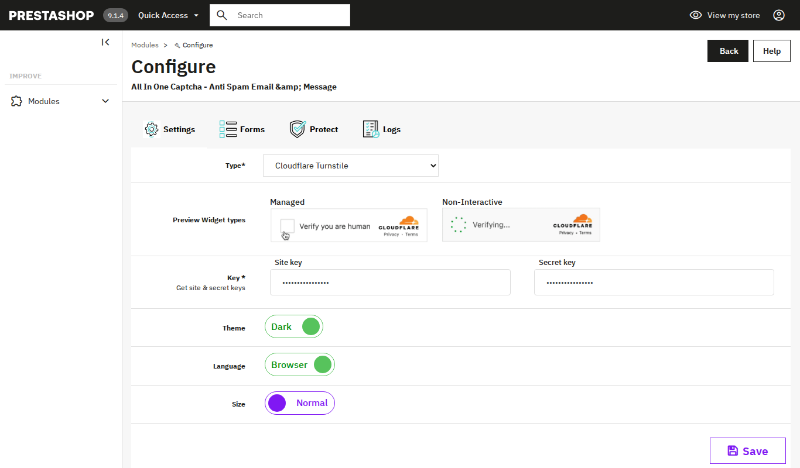

Choose a captcha type

2.1 The Type list
On the Settings tab, open the Type list. The options are grouped into Online and Offline captchas. Pick one type for your whole store.
2.2 Online captchas
Online captchas need a site key and a secret key from the provider. Each provider has a link to get your keys.
- Google reCaptcha: needs a site key and a secret key. Choose V2 - Checkbox, V2 - Invisible or V3. For V3 you also set the Score.
- hCaptcha: needs a site key and a secret key. Choose Checkbox or Invisible.
- Cloudflare Turnstile: needs a site key and a secret key. The preview shows the Managed and Non-Interactive widget types.
2.3 Offline captchas
Offline captchas do not need any keys. They show a small puzzle on your forms.
- Math Captcha: the visitor solves a small sum.
- Icon Captcha: the visitor picks the right icon.
- Text Captcha: the visitor types the text shown.
- Motion Captcha: the visitor draws the shape shown.
- Shuffled Captcha: the visitor clicks the pictures in the order shown.
2.4 Display options
- Score: for Google reCaptcha V3 only. Slide between 0.0 and 1.0. The default is 0.9.
- Position: for Invisible captchas. Choose Bottom Right, Bottom Left or Inline.
- Theme: switch between Light and Dark.
- Language: switch between Shop and Browser.
- Size: switch between Normal and Compact.
- Maximum Failed Attempts: set how many attempts are allowed within a number of Minutes, and for how many Minutes the captcha is then disabled.
Tip We recommend an online captcha. After you choose any type, test each protected form in your shop, signed out, before you leave it on. Click Save at the bottom of the tab to keep your choice.